扉页
版权页
京权图字01-2006-3280
Originally published by Oxford University Press, Great Clarendon Street, Oxford. © 2000
This edition is licensed for sale in the People’s Republic of China only and not for export therefrom.
‘Oxford’ is a registered trademark of Oxford University Press.
图书在版编目（CIP）数据
难忘米兰达：英汉对照／（英）埃金耶米（Akinyemi, R.）著；彭彦译．—北京：外语教学与研究出版社，2006.6（2014.12重印）
（书虫·牛津英汉双语读物）
书名原文: Remember Miranda
ISBN 978-7-5600-5451-3
Ⅰ．难… Ⅱ．①埃… ②彭… Ⅲ．①英语—汉语—对照读物 ②短篇小说—英国—现代 Ⅳ．H319.4:I
中国版本图书馆CIP数据核字（2006）第063081号
出版人： 蔡剑峰
责任编辑：余 军
封面设计：孙莉明
出版发行：外语教学与研究出版社
社 址：北京市西三环北路19号（100089）
网 址：http://www.fltrp.com
版 次：2006年6月第1版
书 号：ISBN 978-7-5600-5451-3
* * *
凡侵权、盗版书籍线索，请联系我社法律事务部
举报电话：(010)88817519 电子邮箱：banquan@fltrp. com
法律顾问：立方律师事务所 刘旭东律师
中咨律师事务所 殷 斌律师
内容简介
内容简介
这是凯茜·威尔逊的第一份工作：同哈维一家生活在一起，照看两个年幼的孩子和料理家务。凯茜父母双亡，也没有兄弟姐妹。她希望在新家里过得快乐，但她不时感到孤独。孩子们的父亲邓肯常常出差去伦敦。凯茜喜欢孩子们，也喜欢邓肯的母亲老哈维太太，但她没有朋友。
当然，还有一个叫尼克的农场主，他住在田地的另一边。他的眼睛很蓝，笑容亲切而友善。但要和尼克交朋友并不容易，因为邓肯恨他，而凯茜同尼克出去吃晚饭也会让老哈维太太很生气。
但是邓肯为什么恨尼克呢？为什么尼克让凯茜在海滩屋要小心呢？为什么谁也不愿意谈到两年前过世的孩子们的母亲米兰达呢？哈维家有许多秘密，令凯茜产生了疑问。
很快，她开始揭开谜底，并终于明白了为什么每个人都忘不了米兰达……
REMEMBER MIRANDA
REMEMBER MIRANDA
It is Cathy Wilson's first job. She is going to live with the Harvey family, and look after the two young children and the house. Cathy's parents are dead, and she has no brothers or sisters. She wants to be happy in her new home, but she is sometimes lonely. Duncan, the children's father, is often away in London. Cathy likes the children and she likes old Mrs Harvey, Duncan's mother, but she has no friends.
Of course, there is Nick, the farmer who lives across the fields. He has very blue eyes, and a warm, friendly smile. But it is not easy to be friendly with Nick, because Duncan hates him, and old Mrs Harvey gets angry when Cathy goes to dinner with Nick.
But why does Duncan hate Nick? Why does Nick tell Cathy to be careful at Beach House? And why does nobody want to talk about Miranda, the children's mother, who died two years ago? There are a lot of secrets in the Harvey family, and Cathy begins to ask questions.
Soon she begins to find the answers. And she learns why everybody remembers Miranda...
目录
1 Beach House
1
Beach House
The children and their father remember Miranda, of course, and they talk about her sometimes. Miranda's sister often visits us, and she always tells the children a story about their mother. Nick remembers Miranda; I know he does. And in the hospital, Grandma remembers, too. They all remember Miranda.
I never met Miranda, but every day I look at her photograph, next to the telephone in the kitchen, the picture of her with her children. Every day I look at her beautiful dark eyes and her long dark hair.
I first saw Miranda's photograph two years ago. It was a cold October day, and I left London for my new job with a family in Norfolk. I drove north, past Norwich, and it began to rain. It was dark and there was a strong wind so I drove slowly and carefully. I wanted to see the Harvey children before they went to bed. But because of the weather, it was eight o'clock before I arrived in Cromer. I drove through the town, along the sea road.
Suddenly, I stopped. There was a tree across the road. I got out of my car. It was a big tree, and I couldn't move it. Just then, a car drove up behind me and a man got out.
'What's the matter? Oh — a tree across the road.' He was a tall man, about thirty years old. 'Where are you going?' he asked.
'Not far,' I said. 'It's a house along this road, near the sea. It's called Beach House.'
'Oh, I know Beach House,' the man said. 'It's the last house along this road. But you can't drive there tonight, with this tree across the road.' He stopped for a minute. 'I'm Nick Watson, and I live at the farm along the road. We can go back to my house, and then walk across the fields to Beach House. Are you visiting for the weekend?'
'No, no. I'm going to work in the house and look after Mr Harvey's children. Their mother died two years ago, and their grandmother has arthritis in her legs and can't walk much now. So I'm going to look after the children and the house,' I told him. 'I met old Mrs Harvey in London, six weeks ago, and she gave me the job. Do you know the Harveys?'
The man laughed. His laugh was warm and friendly. 'Oh, yes, I know them,' he said.
We drove back down the road and into the farm. Then we walked across the fields. It was dark and windy and cold. After ten minutes we arrived at a big white house. The lights were on downstairs, and the house looked friendly. I had no home because my mother and father died a long time ago, and I had no brothers or sisters. This was my first job and I wanted to be happy in this house.
A man opened the door. He looked tired and there was no smile on his face.
'Hello, I'm Cathy Wilson,' I began. 'I'm very late, I know. It's because the weather's so bad.'
'There's a tree down across the road,' Nick said. 'So Cathy left her car at the farm and we walked here.'
Duncan Harvey looked at Nick. 'You always want to help,' he said coldly. 'And you're always there at the right time, ready to help.' His face was angry and I didn't understand why.
'The wind's very strong...' I began.
'It doesn't matter,' Nick said. He smiled at me and his eyes were very blue. 'Goodbye, Cathy. Come and get your car tomorrow.'
Duncan said nothing. I went into the house and he took me through into the kitchen.
'Mother, here's Cathy,' he said.
Old Mrs Harvey sat near the window. 'Hello, my dear,' she said warmly. 'What a wind! Come and have something to eat.' She stood up and walked slowly across the room. Her hair was white, and she had a stick because of her bad legs.
I sat down and began to eat.
'Duncan is angry because he doesn't like Nick,' Mrs Harvey told me quietly. 'He's not angry with you.'
Why didn't Duncan like Nick? I thought. I didn't understand, but I didn't like to ask Mrs Harvey.
The next morning I met the children. Tim was five years old. He ran up and down the garden with a football. Susan was seven years old, a quiet little girl with big brown eyes. She watched me carefully but she didn't smile.
The weather changed and the sun was warm. In the afternoon I walked with the children by the sea. The sky was blue and the sea was beautiful. I cooked dinner and we all ate in the kitchen.
After dinner Juliet arrived.
'I left my car at Nick's,' she said. 'There's a tree across the road.' Juliet had long black hair and dark eyes. She was Miranda's sister.
'Miranda was wonderful,' she told me. 'Wonderful and beautiful.'
'Yes, I know,' I said quietly. 'I saw the photograph of her, next to the telephone, with Tim and Susan.'
'Miranda is our mummy,' Susan said. 'She died a long time ago.'
'Let's go to the cinema,' Juliet said suddenly. 'I want to take Susan and Tim. Cathy, you come with us.'
Tim began to shout. 'Let's go to the cinema! Let's go to the cinema!'
'Be quiet, Tim!' Duncan said. He looked angry. 'No, Juliet. It's school tomorrow, and the children must go to bed early.'
Tim began to cry. 'I want to go with Juliet,' he said.
'No, Tim,' Duncan said.
'We can go to the cinema next weekend,' I said quickly. 'Let's play with your little cars now.' And soon Tim stopped crying.
The days went quickly. Duncan went to stay in London for three weeks for his work. He had a job with a big London company. He often worked on his computer at home, but he went away a lot, too. I liked the children and I liked old Mrs Harvey, but I had no friends.
One day, I came out of a shop in Cromer, and there was Juliet!
'Hello!' she said. 'It's good to see you! Let's go and have a coffee, and we can talk.'
And we did. Juliet told me about her teaching job, and she talked about Susan and Tim, and she talked about her sister.
'I often visited Miranda at Beach House because she wasn't happy there,' Juliet said quietly. 'Duncan is a difficult man; you can see that. He loved her, of course, but he was often away in London. She loved the children, and Grandma, but she was very lonely.'
I was lonely, too, at Beach House.
Juliet stood up and smiled warmly. 'I must go now. Let's go to the cinema this weekend with the children. Ask Grandma tonight, and ring me.'
And so I found a friend.
photograph n. a picture obtained by using a camera and film sensitive to light 照片
kitchen n. the room or area where food is prepared and cooked 厨房
suddenly adv. happening quickly and unexpectedly 突然地
arthritis n. a serious, often long lasting disease causing pain and swelling in the joints of the body 关节炎
friendly adj. acting as a friend 友好的
downstairs adv. on or to a lower floor and esp. the main or ground floor of a house 在楼下
understand v. to know or recognize the meaning of (something) or the words spoken by (someone) 懂得；明白
stick n. a thin rod of wood or metal used to support the body when walking 手杖；拐杖
up and down backwards and forwards 来来回回；往返地
wonderful adj. unusually good 极好的；出色的
cinema n. a theatre in which films are shown 电影院
difficult adj. (of people) not easy to please or persuade （人）不易相处的
ring v. to telephone (someone) （给……）打电话
海滩屋
1．海滩屋
孩子们和他们的父亲都忘不了米兰达，他们自然会不时谈到她。米兰达的妹妹经常来看我们，她总是告诉孩子们关于他们母亲的故事。尼克忘不了米兰达，我知道他忘不了。住院的奶奶也忘不了她。他们都忘不了米兰达。
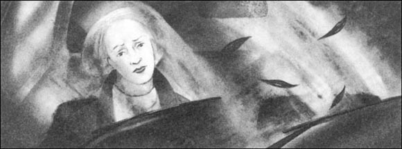
我从没见过米兰达，但我每天都能看见她的照片，就放在厨房里的电话旁边，照片上是她和她的孩子们。每天我都能看到她那美丽的深色眼眸和她深色的长发。
我第一次看到米兰达的照片是在两年前。就在那年10月寒冷的一天，我离开了伦敦，赶往诺福克郡的一个人家，准备开始我的新工作。我驱车北行，过了诺里奇就下起雨来。当时天色昏暗，狂风大作，于是我小心翼翼，把车开得很慢。我想赶在哈维家的孩子们睡觉前见一见他们。但因为这天气，我到克罗默镇之前就已经8点了。我穿过这座小镇，沿着海边公路驱车前行。
突然，我停了下来——一棵树横在公路中间。我下了车。这是一棵大树，我无法挪动它。就在这时候，一辆小汽车开到我身后停了下来，一个男人从车里出来。
“出什么事了？哦——一棵树横在路上。”他个子高高的，三十岁左右。“你要去哪儿？”他问。
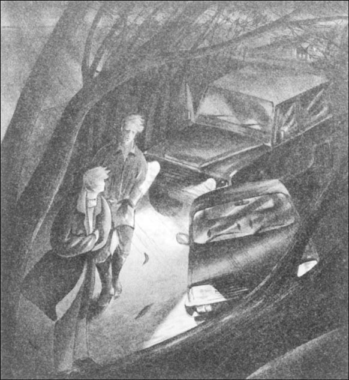
“不远了，”我回答，“就是这条路上的一栋房子，靠近海边，叫做海滩屋。”
“哦，我知道海滩屋，”那男人说道，“那是这条路上最后一栋房子。但是，这棵树横在路上，你今晚开车是没法去那里了。”他顿了顿。“我叫尼克·沃森，就住在这条路边上的农场里。我们可以一起去我家，然后穿过田地，步行去海滩屋。你是周末来串门的？”
“不，不是。我准备去那家工作，去照看哈维先生的孩子们。他们的妈妈两年前去世了，奶奶的腿又有关节炎，现在不能走太多路。所以，我是要去照看孩子们和料理家务。”我告诉他，“六个星期前，我在伦敦碰上了老哈维太太，她给了我这份工作。你认识哈维一家吗？”
那个男人笑了。他的笑温和而友好。“哦，是的，我认识他们。”他回答。
我们掉转车头沿路开进了农场。然后，我们步行穿过田地。天色漆黑，刮着风，很冷。十分钟后，我们来到了一栋大大的白色住宅前。楼下的灯亮着，这栋房子看起来舒适怡人。我没有家，因为我的父母很早以前就过世了，我也没有兄弟姐妹。这是我的第一份工作，我希望在这所房子里过得很快乐。
一个男人来开了门。他看起来很疲惫，脸上毫无笑意。
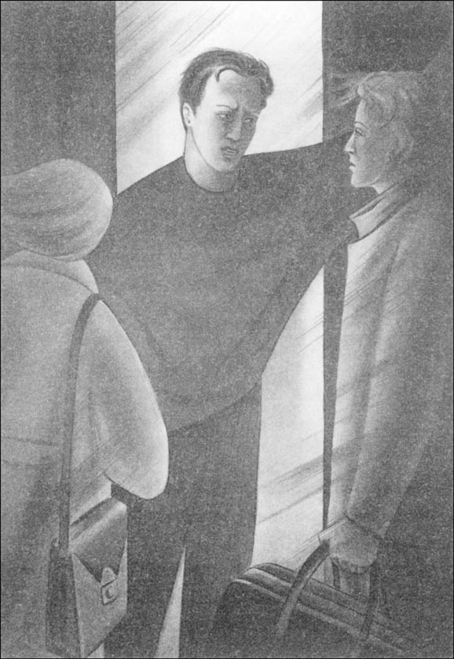
“你好，我是凯茜·威尔逊。”我开口道，“我知道，我来得太晚了，都是因为天气太差了。”
“一棵树横在了公路中间，”尼克说，“所以凯茜把她的车停在了农场，我们步行过来的。”
邓肯·哈维看着尼克。“你永远乐于助人，”他冷冷地说，“你总是在关键的时候出现，准备助人一臂之力。”他的脸看起来很生气，而我不明白为什么。
“风大极了……”我说。
“没关系，”尼克回答。他冲我笑笑，他的眼睛很蓝。“再见，凯茜。明天过来取你的车。”
邓肯什么也没说。我走进屋里，他带着我穿过屋子进了厨房。
“妈妈，凯茜来了。”他说。
老哈维太太坐在窗户旁边。“你好，亲爱的，”她热情地招呼我。“多大的风啊！快来，吃点什么吧。”她站起来，慢慢穿过房间。她满头白发，因为腿脚不好拄着拐杖。
我坐下来，开始吃东西。
“邓肯生气是因为他不喜欢尼克。”哈维太太悄悄地告诉我，“他不是在生你的气。”
邓肯为什么不喜欢尼克？我在想。我不明白，但是我也不想问哈维太太。
第二天早晨，我见到了孩子们。蒂姆5岁。他追着足球在花园中跑来跑去。苏珊7岁，是个文静的小姑娘，长着一双褐色的大眼睛。她小心翼翼地打量着我，脸上并没有笑容。
天气变了，太阳照得暖暖的。下午，我同孩子们一起在海边散步。天空是蓝色的，大海很美。我做好饭，大家在厨房共进晚餐。
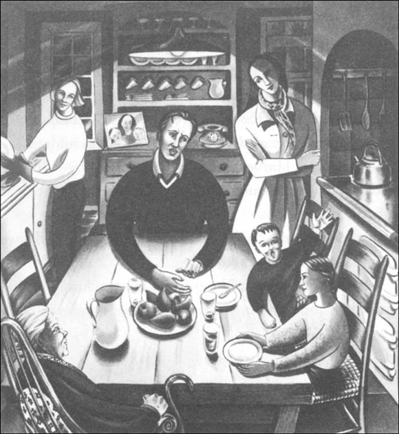
晚餐后，朱丽叶来了。
“我把车停在尼克家了，”她说，“有棵树横在了路中间。”朱丽叶有一头长长的黑发和一双深色的眼睛。她是米兰达的妹妹。
“米兰达很出色，”她告诉我说，“很出色而且很漂亮。”
“是的，我知道。”我平静地回答，“我看到过她的照片，就在电话旁边，跟蒂姆和苏珊在一起。”
“米兰达是我们的妈妈，”苏珊说，“她很早以前就死了。”
“我们去看电影吧！”朱丽叶突然说，“我想带蒂姆和苏珊去，凯茜，你也和我们一块儿去吧！”
蒂姆开始嚷嚷：“我们去看电影吧！我们去看电影吧！”
“安静点儿，蒂姆！”邓肯说。他看起来很生气。“不行，朱丽叶。明天就要上学了，孩子们必须早点儿上床。”
蒂姆哭了起来，说道：“我想和朱丽叶一起去。”
“不行，蒂姆。”邓肯说。
“我们可以下个周末去看电影，”我马上说，“我们现在来玩儿你的小汽车吧。”很快蒂姆不哭了。
日子过得很快。邓肯因为工作要在伦敦待三个星期。他在伦敦的一家大公司里工作。他常常在家里用电脑办公，但也经常出差。我喜欢孩子们，也喜欢老哈维太太，可是我没有什么朋友。
有一天，我走出克罗默镇的一家商店，正巧碰上了朱丽叶。
“你好！”她说，“很高兴见到你！我们去喝杯咖啡吧，可以说说话！”
于是我们去了。朱丽叶跟我讲她教书的工作，讲苏珊和蒂姆，也讲她姐姐。
“我过去常常去海滩屋看米兰达，因为她在那里过得不开心。”朱丽叶悄悄地说，“邓肯是个很难相处的人，这你也能看得出来。当然他很爱她，但他老是去伦敦。她爱孩子们和奶奶，但她很孤独。”
在海滩屋，我也感到很孤独。
朱丽叶站起来，亲切地笑着说：“我现在必须走了。这周末我们带孩子们去看电影吧！今晚问一下奶奶，然后给我打电话吧。”
于是，我找到了一个朋友。
2 The first secret
2
The first secret
The weather changed, and that autumn was warm and beautiful. Nearly every day I walked with the children along the beach. The sea was blue and friendly, and the trees, with their red and yellow autumn colours, looked beautiful in the sunlight. One afternoon we walked across the field and down the hill to the beach. Susan ran in front of Tim. They sang and laughed because they liked playing on the beach.
'Hello, Cathy. How are you?' someone said behind me.
I stopped. It was Nick, the tall farmer with the blue eyes. 'I'm well, thank you.'
'You look lonely,' he said, and smiled. 'You need some friends. Shall we meet in Cromer one day and have dinner?'
And so the next evening I drove to Nick's farm and we went into Cromer for dinner, and then we walked through the town to the gardens near the beach. I liked Nick. He was friendly and interesting. We didn't talk about the Harvey family all evening.
But before we said goodnight, Nick asked about Duncan. 'Are you going to tell Duncan about this evening?'
'No,' I said quickly. Then I stopped. 'Duncan is in London this month,' I went on slowly. 'Mrs Harvey told me — you and Duncan...'
Nick laughed quietly. 'So you have a secret now,' he said. 'Be careful, Cathy, at Beach House.'
'I don't understand,' I said. 'Why don't you like Duncan?'
'I can't talk about it,' Nick said.
I didn't tell Mrs Harvey about Nick, and perhaps that was wrong. But I did tell Juliet.
'I like Nick very much,' I told her. 'I want to see him again.' But Juliet was quiet and didn't talk much that afternoon.
That evening I put the children to bed and read them a story. Then I went slowly downstairs. I thought about Nick. I wanted to see him again.
Mrs Harvey sat quietly in her big chair in the kitchen. 'Cathy, I must talk to you, my dear,' she said. 'Come and sit down here.'
I sat down near her. I didn't want to talk — I wanted to finish my work in the kitchen and go upstairs to watch TV in my room.
'You're a good girl,' Mrs Harvey began kindly. 'Susan and Tim like you, and I'm very happy with your work in the house.'
I smiled, and waited for the 'but'. It arrived immediately.
'But I must talk to you about Nick Watson. Perhaps you are lonely here, with the children and me. Duncan is very quiet, I know that, and he's in London much of the time. But Nick doesn't like Duncan, and Duncan hates Nick. It's a long story and I don't want to talk about it. I'm not going to tell Duncan about your evening with Nick, but I don't want you to see Nick again.'
My face felt hot and my hands felt cold. Mrs Harvey knew about my dinner with Nick! Who told her? And why? I felt angry with Mrs Harvey because I wanted to see Nick again. But I didn't want to lose my job.
'I don't understand,' I began quietly.
Mrs Harvey stood up. 'Why must you understand?' she asked angrily. 'Don't see Nick Watson again! Do you hear me?'
'Grandma!'
We looked up, and saw Susan and Tim on the stairs. 'Children! What are you doing!' Mrs Harvey said. She took her stick and began to walk slowly across the room.
'Tim was afraid,' Susan said. 'He couldn't sleep, and so we came to call Cathy.'
'I wasn't afraid — you were afraid, because of Nick,' Tim said, and he pushed Susan.
'No, Tim!' Mrs Harvey shouted. Her face went white. 'Don't do that! Cathy, please go upstairs and put them back to bed.'
I ran upstairs and took the children back to their room. Tim put his little hands on my face and kissed me. 'Goodnight, Cathy,' he said. 'I like you.'
I smiled. 'I like you, too,' I said.
I said goodnight to Susan. 'I don't want Grandma to be angry with you,' she said quietly.
'Why are you afraid of Nick?' I asked.
'I don't know,' Susan said. 'Daddy hates him, but I don't know why.'
'He's a bad man,' Tim said. 'Grandma told me.'
And so I didn't see Nick again for a long time.
hill n. a raised area of land, not as high as a mountain, and not usu. as bare or rocky 小山
perhaps adv. possibly; maybe 也许
upstairs adv. on or to the upper floor(s) of a building 向楼上
immediately adv. without delay; at once 立刻
hate v. to have very strong dislike of 憎恨
stairs n. a set of steps 楼梯
shout v. make a loud sound with the voice 喊；大叫
kiss v. to touch with the lips as a sign of love or as a greeting 亲吻
第一个秘密
2．第一个秘密
天气变换，那年秋天温暖而美丽。我几乎每天都要和孩子们沿着海滩散步。大海湛蓝、静谧。树木都染上了红红黄黄的秋天的色彩，在阳光下看起来很是漂亮。一天下午，我们穿过田地，沿着山坡而下，到了海边。苏珊跑在蒂姆前头，他们唱着、笑着，因为他们喜欢在海滩玩耍。
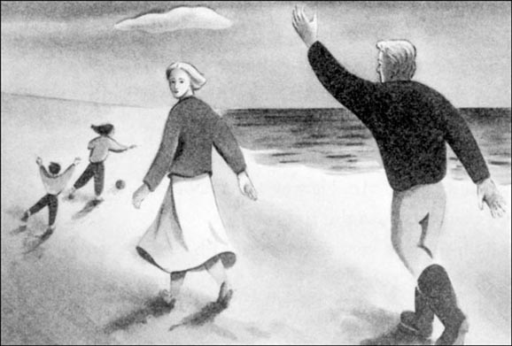
“嗨，凯茜。你好吗？”有人从后头跟我打招呼。
我站住了，是尼克，那个长着一双蓝眼睛的高个子农场主。“我很好，谢谢。”
“你看起来很孤独，”他笑着说，“你需要一些朋友。哪天我们能在克罗默镇碰个面吃顿饭吗？”
于是，第二天傍晚，我开车去了尼克的农场，同他一道去克罗默镇吃了晚饭。然后，我们步行穿过小镇去了海滩附近的花园。我喜欢尼克。他很友好，也很风趣。整个晚上，我们都没有提哈维一家。
但是就在我们互道晚安之前，尼克问起了邓肯。“你打算把今天晚上的事告诉邓肯吗？”
“不，”我马上回答，然后打住了。“这个月邓肯在伦敦，”我慢慢地接着说，“哈维太太告诉我——你和邓肯……”
尼克轻轻地笑了。“所以你现在有秘密了。”他说，“凯茜，你在海滩屋要小心点儿。”
“我不明白，”我说，“为什么你不喜欢邓肯？”
“我不能说。”尼克回答。
我没有告诉哈维太太关于尼克的事。也许那样不对。但我确实告诉了朱丽叶。
“我非常喜欢尼克。”我告诉她，“我想再次见到他。”但是朱丽叶很沉默，那天下午都没怎么说话。
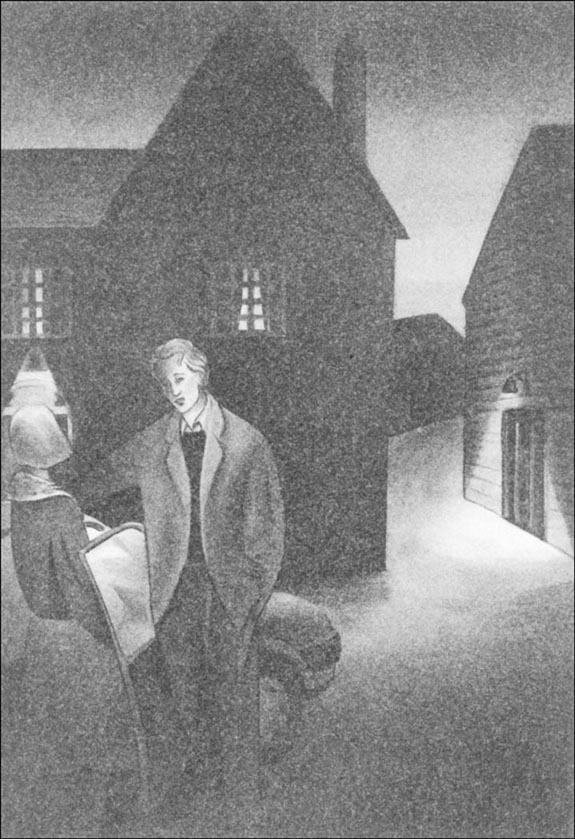
那天晚上，我把孩子们弄上床，给他们讲了个故事。然后，我慢慢下了楼。我想到了尼克。我想再次见到他。
哈维太太静静地坐在她厨房中的大椅子里。“凯茜，亲爱的，我必须和你谈谈，”她说，“过来坐这儿吧。”
我在她旁边坐下。我不想闲谈——我想干完厨房里的活儿，上楼回自己房间看电视。
“你是个好姑娘，”哈维太太和蔼地开口道，“苏珊和蒂姆都喜欢你，你在家里干得不错，我很高兴。”
我笑着等着她说“但是”。很快她就转折了。
“但是我必须跟你谈谈尼克·沃森的事儿。也许你在这里，同孩子们和我在一起，很孤单。我知道，邓肯沉默寡言，而且有很多时候都在伦敦。但是尼克不喜欢邓肯，而邓肯憎恨尼克。这事说来话长，我不想说这些。我不打算告诉邓肯那天晚上你同尼克的事，但我也不希望你再去见尼克。”
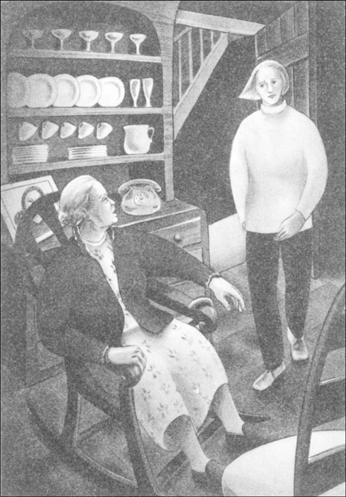
我的脸在发烫，双手却冰凉。哈维太太知道了我同尼克共进晚餐！谁告诉她的？为什么？哈维太太让我感到很生气，因为我想再见见尼克。但我不想丢了工作。
“我不明白。”我小声地说。
哈维太太站起来。“为什么你必须要明白？”她生气地问，“不要再见尼克·沃森！听见我说的了吗？”
“奶奶！”
我们抬头看去，发现苏珊和蒂姆站在楼梯上。“孩子们！你们在干什么？”哈维太太说。她拿起拐杖，开始慢慢地穿过房间。
“蒂姆很害怕，”苏珊说，“他睡不着，所以我们来叫凯茜。”
“我不害怕——是你害怕，因为尼克。”蒂姆边说边推苏珊。
“不，蒂姆！”哈维太太喊道。她的脸变得苍白。“别那么做！凯茜，请上楼，把他们弄上床吧。”
我跑上楼，把孩子们带回到他们的房间。蒂姆把他的小手放在我脸上，亲了亲我。“晚安，凯茜。”他说，“我喜欢你。”
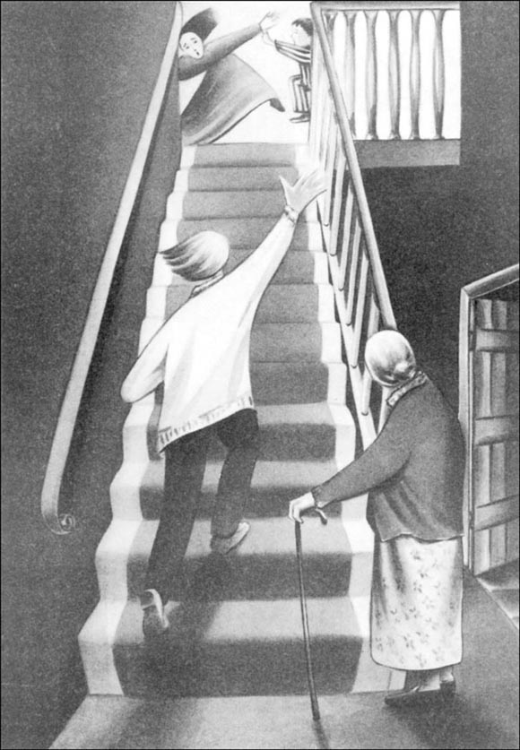
我笑了。“我也喜欢你。”我回答。
我向苏珊说晚安。“我不想奶奶生你的气。”她轻轻地说。
“你为什么怕尼克？”我问。
“我不知道，”苏珊回答，“爸爸恨他，但我不知道为什么。”
“他是一个坏人，”蒂姆说，“奶奶告诉过我。”
于是，有很长一段时间我都没有再见尼克。
3 A terrible accident
3
A terrible accident
Duncan came back and worked at home again. Why did he hate Nick? I wanted to understand, but I couldn't ask because I was a little afraid of Duncan. He didn't talk much and he worked for hours in his room.
Old Mrs Harvey liked to cook, but because of her arthritis she couldn't cook much and she couldn't look after the children and the house. She often felt upset because of this. But she was much happier with Duncan at home. She smiled more and she cooked breakfast for him nearly every day. Sometimes she made bread. Duncan was kind to his mother and he played with the children every day. He drove them to school every morning and I drove them home in the afternoons.
One Friday afternoon I drove away from Beach House past Nick's farm. Just then, I saw Nick's Landrover on the farm road. 'He's driving very fast,' I thought. 'Oh no! He's not going to stop—' And he didn't. He drove out of the farm road and very nearly hit my car. I couldn't stop, So I drove off the road and the Landrover went past, only centimetres away.
The Landrover stopped. Nick got out, ran back to my car, and opened the door. 'Cathy! Are you all right?'
Then I saw a girl in the Landrover. It was Juliet. She got out and came up to us.
'You must drive more carefully, Nick!' she said angrily. 'You nearly hit Cathy then.' She wore a beautiful red coat and black trousers. Her dark eyes were angry, but they looked at Nick and not at me.
'Cathy's all right,' he said to her. He put his hand on her arm. His blue eyes were kind, but they looked at Juliet and not at me.
'We don't want more accidents,' Juliet said quietly. 'Remember Miranda.'
'Please move your Landrover,' I said coldly. 'I must get to school for the children. I'm going to be late.'
'Don't be angry.' Nick smiled at me. 'I'm very sorry.' He got back into the Landrover and moved it.
Juliet stood by my car.
'So you and Nick are friends,' I said to her. 'You didn't tell me about that.'
Juliet said nothing for a minute. 'You don't understand,' she said in the end. 'It's very difficult.'
I drove back on to the road. I nearly cried, and I felt very angry. Juliet was my friend. I had coffee with her and went to the cinema with her, but she said nothing about Nick. Why not? I had dinner with Nick and we talked all evening, but he said nothing about Juliet. Why not? I felt angry with Juliet and with Nick.
That evening Mrs Harvey's arthritis was bad and she went to bed early. Duncan cooked dinner and I ate with him and the children. Duncan talked and laughed with the children and I felt happy to be with them. Once, I felt Duncan's eyes on me, and suddenly my face felt hot. I didn't want to think about Juliet and Nick.
But later, in my room, I remembered Juliet's angry face and eyes. We don't want more accidents. Remember Miranda. Then I remembered old Mrs Harvey in London. The children's mother died two years ago. She told me that, but she didn't tell me about an accident. Perhaps it was a car accident? Perhaps Nick killed Miranda with his Landrover? Duncan hates Nick. Mrs Harvey told me that, too. Did Duncan hate Nick because Nick killed Miranda?
I slept in the end, but I didn't sleep well. The next day was Saturday and I was free in the morning. Duncan went to the shops with the children and I went to the library in Cromer. Miranda died on 30th September, two years ago. I knew that. Perhaps the town's newspaper wrote about her after she died. I must find something about her because I wanted to understand the Harvey family.
I found the old newspapers and began to read. The newspaper of 1st October told me everything.
YOUNG MOTHER DIES IN TERRIBLE ACCIDENT
Miranda Harvey, aged 26, fell down the stairs at her home and died later in hospital. Miranda lived with her husband and two children not far from Cromer. Duncan Harvey's mother lives with them. 'This is a terrible day for the Harvey family,' she said. 'We all loved Miranda very much, and now her two little children are without a mother.'
Juliet, aged 24, Miranda's sister, is a teacher at one of the schools in Cromer. 'My sister was a wonderful mother,' she said, 'and a loving sister to me.'
I sat with my head in my hands. I could not move. We don't want more accidents. Remember Miranda. It wasn't a car accident; Miranda, that wonderful mother, fell down the stairs at Beach House — and I ran up and down those stairs six or seven times a day.
Then I looked at some of the later newspapers.
POLICE QUESTION DUNCAN HARVEY
Harvey, aged 34, was at home on the day of his wife's accident. He was upstairs with her before she fell. Then he went downstairs to the kitchen. How did the accident happen? Harvey does not know. He heard nothing, he says.
The police questioned Duncan for two days, I read, but in the end he went home to his children. It wasn't Nick, in his Landrover. Miranda died at home, and the police questioned Duncan. My hands were cold, my legs were cold, and I felt afraid.
Things were different at Beach House after my visit to the library. The house was a house with a secret, and the Harveys were a family with a secret. I thought about Miranda and the accident every day. I wanted to talk to someone about it, but I was afraid. Why did the police question Duncan? Be careful at Beach House. Why did Nick say that to me? Was it because of Miranda's accident? There were more questions in my head now. And the biggest question was this: did Miranda fall — or did someone push her?
upset adj. very sad, worried about something 心烦的
Landrover n. a type of strong car suitable for travelling over rough ground 路虎（一种多用途越野车）
centimetre n. a unit for measuring length 厘米
in the end finally 最后
difficult adj. hard to understand or deal with 难的；麻烦的
kill v. to cause death 杀死
loving adj. showing love 钟爱的；慈爱的
question v. to ask (someone) questions 盘问；询问
可怕的意外
3．可怕的意外
邓肯回家了，又开始在家里工作。为什么他恨尼克？我想知道，但我不能问，因为我有点儿怕邓肯。他不爱说话，在自己的房间里一工作就是几个小时。
老哈维太太喜欢做饭，但因为她患有关节炎，不能做得太多，她也无法照看孩子们和打理家务。这一切经常让她感到很苦恼。但邓肯在家时，她会高兴得多。她笑得也比较多了，而且几乎每天都为他做早餐。有时她会做面包。邓肯对他母亲很好。他每天都会陪孩子们玩儿。他每天早晨开车把孩子们送到学校，我每天下午开车把他们接回家。
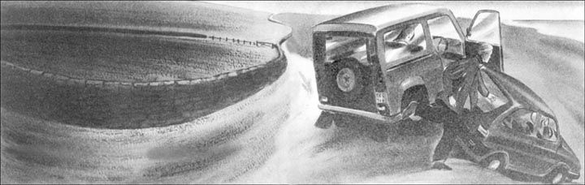
一个周五的下午，我从海滩屋开车出来，路过尼克的农场。就在这时，我看见尼克的“路虎”车在农场公路上飞奔。“他开得太快了。”我想，“哦，不！他不打算停下来——”他确实没有停车！他的车冲出农场公路，几乎撞到了我的车。我没法停车，只能开离了公路，“路虎”开了过去，离我的车只有几厘米远。
“路虎”停了下来。尼克下车往回跑到我的车边，拉开门。“凯茜，你还好吗？”
这时，我看见一个女孩坐在“路虎”里，是朱丽叶。她下了车，走上前来。
“你开车应该更小心一些，尼克！”她生气地说，“你当时差点儿就撞到凯茜了。”她穿着一件漂亮的红外套和一条黑裤子。她深色的眼睛看起来很愤怒，但它们盯着尼克，而不是我。
“凯茜没事儿，”他对她说。他把手放在她的手臂上。他的蓝眼睛看起来很亲切，但它们看着朱丽叶，而不是我。
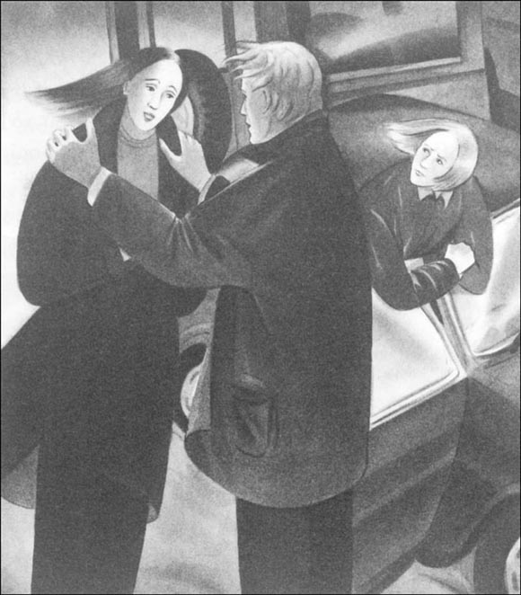
“我们都不想再出意外了。”朱丽叶轻轻地说，“记住米兰达。”
“请把你的‘路虎’移开，”我冷冷地说道。“我得去接孩子们。我要晚了。”
“别生气。”尼克冲我笑笑。“我很抱歉。”他回到“路虎”上，启动汽车。
朱丽叶站在我的车旁。
“这么说你和尼克是朋友。”我对她说，“你没有告诉过我。”
朱丽叶沉默了一分钟。“你不明白，”她最后说，“这很难跟你说清。”
我把车开回到公路上。我几乎要哭出来了，我很愤怒。朱丽叶是我的朋友。我和她一起喝咖啡，一起看电影，但她一点儿都没有提到尼克。为什么不说？我和尼克一起吃晚饭，我们谈了一晚上，但他一点儿都没有提到朱丽叶。为什么不说？朱丽叶和尼克都让我生气。
那天晚上，哈维太太的关节炎犯得很严重，她很早就睡了。邓肯做的晚餐，我和他以及孩子们一起吃的饭。邓肯与孩子们说说笑笑。跟他们在一起，我感到很快乐。有一瞬间，我感觉到邓肯在看我，我的脸突然烫起来。我不愿意去想朱丽叶和尼克。
但是后来，在我的房间里，我想起了朱丽叶愤怒的表情和双眼。“我们都不想再出意外了。记住米兰达。”于是，我又想起了老哈维太太在伦敦的时候。“孩子们的妈妈两年前去世了。”她告诉我这件事，但并没有跟我说那是个意外。也许是出了车祸？也许是尼克开着他的“路虎”杀了米兰达？“邓肯憎恨尼克。”哈维太太也曾说过。难道邓肯恨尼克是因为尼克杀了米兰达？
最终我还是睡了，但睡得不好。第二天是星期六，上午我可以自由安排。邓肯和孩子们出去购物了。而我去了克罗默镇的图书馆。我知道，米兰达死于两年前的9月30日。也许，这个小镇的报纸在她死后报道过她。我必须查明一些关于她的事，因为我想了解哈维一家。
我找到了那些旧报纸，开始阅读。10月1日的报纸告诉了我一切。
年轻的母亲死于可怕的事故
米兰达·哈维，26岁，从家中的楼梯上摔了下来，稍后在医院去世。米兰达同她的丈夫和两个孩子生活在一起，住在克罗默镇附近。邓肯·哈维的母亲同他们住在一起。“对哈维家来说，这是可怕的一天。”她说，“我们都非常爱米兰达，而现在她的两个小孩失去了母亲。”
朱丽叶，24岁，米兰达的妹妹，是克罗默镇一所学校的教师。“我姐姐是一位很出色的母亲，”她说，“对我而言是一位慈爱的姐姐。”
我双手抱头坐在那里，一动不动。“我们都不想再出意外了。记住米兰达。”那不是车祸。米兰达，这位出色的母亲，是从海滩屋的楼梯上摔了下来——而我每天都要在这楼梯上跑上跑下六七回。
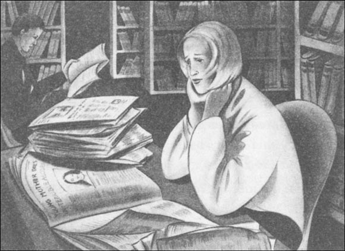
然后，我又看了一些后来的报纸。
警察盘问邓肯·哈维
哈维，34岁，他妻子出事那天正在家中。在他妻子摔下来前，他俩都在楼上。随后他下楼去了厨房。意外是怎么发生的呢？哈维并不知道。他说，他什么都没听到。
报纸上说，警察盘问了邓肯两天，但最后他回家了，回到了孩子们身边。这意外不是因为尼克开着“路虎”造成的。米兰达死在家里，警察盘问了邓肯。我手脚冰凉，我感到很害怕。
从我去过图书馆之后，海滩屋的一切都不同了。这所房子是一所藏着秘密的房子，哈维一家是藏着秘密的一家。我成天想着米兰达和那场意外。我想找个人说说这事，但我很害怕。为什么警察会盘问邓肯？“在海滩屋要小心点儿。”为什么尼克对我说这个？是因为米兰达的意外吗？现在我脑子里的疑问更多了。而最大的疑问就是：米兰达是自己摔下去的——还是有人把她推下去的？
4 Not one of the family
4
Not one of the family
Winter came. The weather was cold and windy, but sometimes when the weather was a little better I walked on the beach with the children. Two or three times I saw Nick and he smiled and we talked a little. I liked Nick, but I was angry with him because of Juliet, and he didn't ask me to dinner again.
School finished for Christmas, and I drove the children to a farm near Cromer to buy a Christmas tree. After my mother and father died, Christmas was a bad time for me because I was lonely. 'But this year,' I thought, 'I'm going to be with the Harvey family. Perhaps I can forget about Miranda's accident and feel happy at Christmas.'
'Christmas is coming! Christmas is coming!' the children sang. They were very happy about Christmas.
We walked through the farm and looked at the Christmas trees. Tim ran up and down. 'I want this tree, Cathy!' he called. Then he ran up and down again. 'I want this tree, Cathy!' he called again.
Suddenly he ran into a tree and then fell over. When he fell, his head hit a second tree. He began to cry.
I ran to him. There was a long cut on his head and a lot of blood.
'Don't cry, Tim. You're going to be all right,' I said quietly. 'Let's go to the hospital and see the doctor.'
'Oh no!' cried Susan. 'The hospital! Is Tim going to die?'
'No, no. Tim's going to be all right. But the doctor must look at this cut on his head,' I said. I carried Tim to the car and drove quickly to the hospital. After we saw the doctor, I phoned Duncan and he came to the hospital.
Susan ran to him. 'Daddy, there was an accident, and there was a lot of blood. Is he going to die?'
Duncan sat down. His face was white, but he smiled at Susan and Tim. 'Tim's going to be OK. Look at him! He's feeling much better now.'
Duncan put his arm around me. 'Thank you, Cathy,' he said. 'You're very good with the children. Beach House is a happier home now, with you there.' Slowly we walked out of the hospital. 'Please come home in the car with us,' Duncan said. 'We can come back later for your car. Please.'
I liked Duncan then, and I wanted to go with him and the children. But I was afraid, too, because of Miranda's accident. I didn't want to talk to him, and so I went home in my car.
The next day Juliet came to see Tim. She played with the children and then she stayed for dinner. After the children went to bed, she came to see me in my room.
'I'm sorry, Cathy,' she began. 'I wanted to see you, but I was afraid because you're angry with me.'
'Yes, I am angry,' I said slowly. 'You were my friend. I went to dinner with Nick and I told you everything, but you didn't tell me about you and Nick. Why not?'
Juliet looked at me but said nothing.
'Why didn't Nick tell me about you? Did he tell you about our dinner?'
'Yes. I was upset, but Nick likes to talk to women. He likes you and he wanted to take you to dinner. But he loves me and nothing is going to change that.' She stopped. 'I told Grandma about your dinner with Nick, because I didn't want you to be friends with Nick.'
'You don't want her to know about you and Nick, but you told her about my dinner with Nick! Why? I don't understand!'
'I'm sorry. I love him very much; he's everything to me. But our love is a secret. Duncan hates Nick, and I don't want him to know about our love.'
'There are a lot of secrets in this family,' I said. 'Secrets about you and Nick. Secrets about Miranda. Why didn't you tell me about Miranda's accident?'
'How do you know about that?' Juliet asked.
'I went to the library and read about it in the newspapers.'
Juliet stood up. 'Nobody talks about Miranda's accident,' she said. 'Nobody saw her when she fell down the stairs.'
I wanted to ask about Duncan. I wanted to ask: 'Why did the police question Duncan?' but I was afraid of the answer. 'Well, I don't like living with all these secrets,' I said. 'Every time I go downstairs I remember Miranda.'
Juliet laughed then, and it was a cold laugh. 'We all live with that, Cathy. You're not one of the family; you're not going to fall downstairs.'
* * *
Tim felt better the next day, and in the afternoon Duncan took the children back to the farm to buy the Christmas tree. And then I phoned Nick.
'I want to talk to you,' I said quietly. 'I need to talk to someone.'
'Mmm,' said Nick. 'Let's meet on the beach. At three o'clock.'
I waited in my room and listened to the sea and the wind. Perhaps Juliet was with Nick. I didn't know, but I needed to talk to someone about the Harvey family. I walked slowly across the field and down the hill to the beach. It was a cold afternoon and there was a strong wind. The sea was dark. Nick wasn't there; perhaps he didn't want to talk to me. But in the end he arrived.
'What's the matter?' he asked.
'I talked to Juliet last night,' I began. 'About Miranda. I don't know why, but I feel afraid. What do you know about Miranda's accident?'
'The police questioned Duncan,' Nick said. His blue eyes looked past me. Suddenly his face changed. 'Duncan's here. Did you tell him to come?'
'No, I didn't. He left the house before I called you.'
Duncan ran down the hill. 'Cathy!' he called.
'What are you doing here?' Nick said angrily. 'Cathy wants to talk to me.'
'Cathy, come home,' Duncan said quietly.
'She's not going back with you. She's afraid of you.'
'Afraid of me? Why?'
I said nothing. Duncan's face was angry.
'Why don't you tell us about Miranda?' Nick asked. His face was angry, too. 'I want to ask you something. The police questioned you, Duncan. What did you tell them about that night?'
'So you're asking me about Miranda,' Duncan shouted. 'You remember Miranda, then? Well, I remember, too. I remember her every day.' Duncan looked at me, and then back at Nick. 'You think I killed Miranda? Go to the police, then, and tell them that. Yes, I hated her, and I hated you, too, Nick. She wanted to leave me and the children because of you. She loved you. She told me that. But did you love her, Nick?'
'Of course I didn't,' Nick said. His face was red. 'I liked Miranda. We went to dinner four or five times, that's all. She was lonely.' He looked at me. His eyes were very blue, but suddenly I didn't like his eyes and I didn't like his face.
'She wanted to leave me and her children, but you didn't love her,' Duncan said. 'You loved her sister. I know that. But Miranda didn't know about you and Juliet. Why didn't you tell her?'
I didn't want to listen. I felt ill and very cold, and I began to walk back up the hill. I wanted to go home, but where was my home? I didn't have one.
Christmas n. a Christian holy day held on December 25th in honour of the birth of Christ 圣诞节
run into to hit forcefully 撞在……上
blood n. the red liquid which flows through the body 血
phone v. to telephone 打电话
be friends with has a friendship with 与……交友
家里的外人
4．家里的外人
冬天来了。天气寒冷而多风。但每当天气稍微好些，我就会和孩子们去海滩上散步。有两三次我看见了尼克，他微笑着，我们会说上几句话。我喜欢尼克，但因为朱丽叶，我在生他的气，而他也再没有邀我共进晚餐。
圣诞节快到了，学校放假了，我开车带孩子们去克罗默镇附近的一个农场买圣诞树。在我父母去世后，圣诞节对我来说是难捱的日子，因为我很孤独。“但是今年，”我想，“我将和哈维一家人在一起。也许，我可以忘掉米兰达的意外，过一个快乐的圣诞节。”
“圣诞节快到了！圣诞节快到了！”孩子们唱着。圣诞节的到来让他们非常高兴。
我们在农场里逛，挑选圣诞树。蒂姆跑来跑去。“我想要这棵树，凯茜！”他叫着。然后又到处跑起来。“我想要这棵树，凯茜！”他又嚷道。
突然，他撞上了一棵树，跌倒了。跌倒时，他的头又撞到了另一棵树。他哭了起来。
我向他跑过去。他的头被划了一道长长的口子，流了很多血。
“别哭，蒂姆。你会没事儿的，”我轻轻地说，“我们去医院看看大夫吧。”
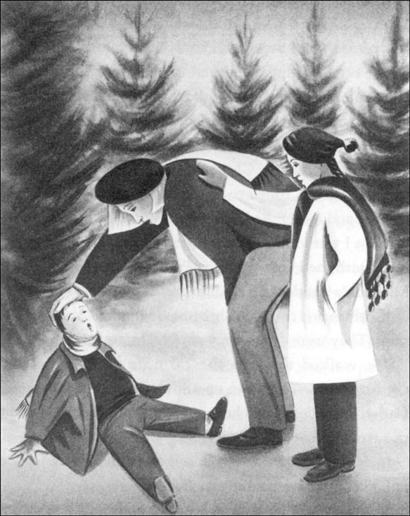
“噢，不！”苏珊哭着说，“医院！蒂姆要死了吗？”
“不，不。蒂姆会好的，但医生必须检查他头上的伤口。”我回答。我把蒂姆抱上车，迅速开车到了医院。看过医生后，我给邓肯打了电话，他到医院来了。
苏珊向他跑去。“爸爸，出了意外，有很多血，他会死吗？”
邓肯坐下来。他的脸色苍白，但他笑着对苏珊和蒂姆说：“蒂姆会没事的。看看他！他现在感觉好多了。”
邓肯伸手搂住了我。“谢谢你，凯茜，”他说，“你对孩子们这么好。有你在，海滩屋现在都更快乐了。”我们慢慢地走出医院。“请上车和我们一起回家吧，”邓肯说，“我们可以回头再来取你的车。来吧。”
当时我喜欢上了邓肯，我想同他和孩子们一起走。但是我又害怕——因为米兰达的意外。我不想和他说话，于是我自己开车回了家。
第二天，朱丽叶来看蒂姆。她陪孩子们玩儿，然后留下来吃了晚餐。孩子们睡觉后，她到我的房间来看我。
“对不起，凯茜。”她开口道，“我想见你，但又怕你生我的气。”“没错，我是很生气，”我慢慢地说，“你是我的朋友。我去跟尼克吃饭，我把一切都告诉了你，但你却没有告诉我你和尼克的事。为什么不告诉我呢？”
朱丽叶望着我，但一言不发。
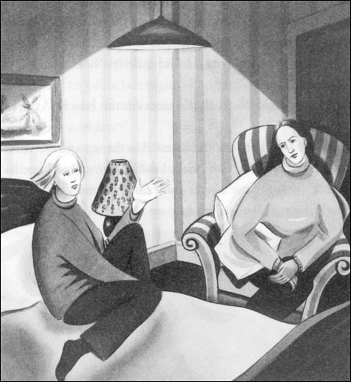
“为什么尼克不告诉我你的事呢？他告诉你我们共进晚餐的事了吗？”
“是的，我很烦恼，但是尼克喜欢同女人搭讪。他喜欢你，想带你去吃晚餐。但他爱我，没有什么会改变这些。”她顿了顿，“我把你和尼克吃晚餐的事告诉了奶奶，因为我不想让你和尼克成为朋友。”
“你不想让她知道你和尼克的事，可你却把我同尼克吃晚餐的事告诉了她！为什么？我不明白！”
“对不起。我非常爱他；对我来说，他就是一切。但我们的爱是个秘密。邓肯恨尼克，而我不想让他知道我们相爱。”
“这个家里的秘密很多。”我说，“关于你和尼克的秘密，关于米兰达的秘密。为什么你不告诉我米兰达的那次意外呢？”
“你是怎么知道那件事的？”朱丽叶问。
“我去了图书馆，从报纸上得知的。”
朱丽叶站起来。“没有人提起米兰达的那次意外。”她说，“当她从楼梯上跌下来的时候，没有人看见。”
我想问问邓肯的事。我想问：“为什么警察盘问邓肯？”但我害怕听到答案。“嗯，我不希望同所有的这些秘密生活在一起，”我说，“我每次下楼都会想起米兰达。”
结果，朱丽叶笑了起来，是冷笑。“我们都同这秘密生活在一起，凯茜。你不是这家中的一员，你不会摔下楼的。”
* * *
第二天，蒂姆感觉好些了。下午，邓肯带孩子们回那个农场去买圣诞树。于是，我给尼克打了个电话。
“我想和你谈谈。”我平静地说，“我需要跟人说说话。”
“嗯——，”尼克回答，“我们就在海滩见吧。3点钟。”
我在自己的房间里等待，听着海浪声和风声。也许，朱丽叶正和尼克在一起，我不知道，但我需要跟人谈谈哈维家的事。我慢慢走过田地，走下山坡，到了海边。那天下午很冷，刮着大风，大海昏暗一片。尼克不在那儿，也许他不想和我说话。但他最终还是来了。
“出什么事了？”他问。
“昨晚，我同朱丽叶谈了话，”我说，“关于米兰达，不知道为什么，我感到害怕。有关米兰达的意外，你知道些什么？”
“警察盘问了邓肯，”尼克说。他的蓝眼睛越过我望着我身后。突然，他的脸色变了。“邓肯在这儿，你叫他来的吗？”
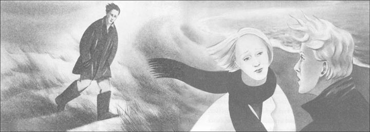
“不，我没有。我给你打电话前他就离开家了。”
邓肯跑下山坡。“凯茜！”他喊道。
“你来这儿干什么？”尼克生气地说，“凯茜想和我聊聊。”
“凯茜，回家。”邓肯平静地说。
“她不愿跟你回家。她怕你。”
“怕我？为什么？”
我什么都没说。邓肯一脸愤怒。
“为什么你不告诉我们米兰达的事呢？”尼克问。他的脸看起来也很愤怒。“我想问问你，邓肯，警察曾盘问过你，关于那天晚上，你告诉了他们些什么？”
“原来你是问我米兰达的事，”邓肯吼起来，“这么说，你还记得米兰达？啊，我也记得。我每天都想着她。”邓肯看看我，又转回去盯着尼克。“你认为是我杀了米兰达？那就去找警察吧，去告诉他们。是的，我恨她，我也恨你，尼克。就因为你，她想离开我和孩子。她爱你。她告诉我了。但是你爱她吗，尼克？”
“当然，我不爱她。”尼克说。他的脸红了。“我喜欢米兰达。我们一起吃了四五回饭，仅此而已。她很孤独。”他望着我，他的眼睛很蓝，但突然我不喜欢他的眼睛和他的脸了。
“她想离开我和孩子，但你并不爱她，”邓肯说，“你爱的是她妹妹。我知道。可是米兰达不知道你和朱丽叶的事。你为什么不告诉她呢？”
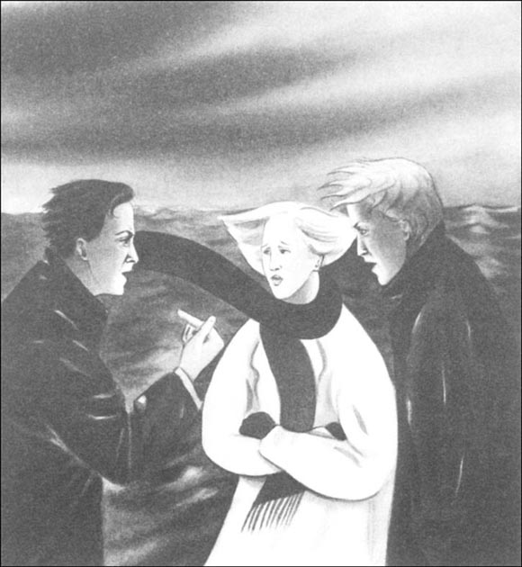
我不想听了。我感到很难受、很冷。我开始往回走，爬上山坡。我想回家，但我的家在哪里？我没有家。
5 Home
5
Home
'Cathy! Wait for me!' It was Duncan. He ran up behind me. 'I want to talk to you, Cathy. Listen — all women like Nick. I know that. But he's not a good friend for you to have. You heard him on the beach. He likes to have lots of women friends. How can you be happy with a man like that?'
'You're wrong,' I said slowly. 'I stopped liking Nick weeks ago.' Nick wasn't important to me now, I knew that. But Duncan was important to me — and I couldn't tell him. For a minute or two I said nothing, but the questions were still there. In the end I said: 'Why didn't you tell me about Miranda's accident? Why was it a secret? I feel very upset about all this.'
'I wanted to forget all about it,' Duncan said slowly. 'It was a very difficult time. Miranda and Juliet loved Nick. Juliet hated Miranda. She was afraid because Miranda wanted to live with Nick. Juliet told me about Miranda and Nick because she wanted me to stop Miranda.'
'Juliet told me about her love for Nick. It was a secret, she said.'
'A secret?' Duncan laughed angrily. 'Well, Miranda never knew about it, it's true. Juliet's very careful — she never talks about Nick. But it wasn't difficult to see. I saw her car at his farm, and I often see it there now.'
The sky was darker now. 'Was Juliet here, the night Miranda died?' I asked. Perhaps Juliet killed her sister, I thought.
'No, no. Juliet wasn't here, Nick wasn't here,' Duncan said. 'I was upstairs, and the children were in bed. Then Miranda called me into our bedroom and said: “I'm going to leave you, Duncan. I'm going to live with Nick.” I was very angry and upset, but I ran downstairs into the kitchen before she fell. Cathy, nobody killed Miranda. It was an accident, a terrible accident.' Duncan put his hand on my arm. 'Can't you forget about Miranda now? Can't we begin again?'
But I couldn't answer then.
We arrived at Beach House. There was a light downstairs in the kitchen, and a light in the sitting room.
'The children are watching television,' Duncan said. We went into the house and Duncan opened the sitting room door. 'We're home now,' he told the children. 'We're going to the kitchen to make dinner.'
The kitchen was warm and quiet. Old Mrs Harvey sat in her chair. Suddenly, I felt afraid again. There was something terrible about old Mrs Harvey's face. I stood by the kitchen door; I couldn't go into the room.
'We're back, Mother,' Duncan said. 'Cathy's with me; everything's all right.'
Mrs Harvey's eyes were dark in her white face. 'I was afraid, Duncan! I was afraid! The children love Cathy, and you love Cathy. I can see that. But Cathy loves Nick. She's going to leave you and the children. Remember Miranda! It's all happening again. I can see that.'
'Mother! It's not true! Don't talk like this!'
'Remember Miranda!' Mrs Harvey said again. 'Don't be upset, Duncan. I'm always here, you know that. I can't look after you because of my arthritis, but I love you most, you know that, and I'm going to help you again.'
Suddenly I understood it all. 'Tell us about Miranda,' I said quietly. 'What did you do that night?'
Mrs Harvey looked at me then. 'I don't want you to leave, Cathy. I want you to stay with the children and be happy with Duncan. Let me tell you about that night,' she said, 'and then you must stay here with us.'
The room was very quiet. Duncan held my hand, and his hand was warm and strong.
'Miranda wanted to leave Duncan. I was upstairs in my room, and I heard her. Duncan ran downstairs and I came out of my room and talked to Miranda. She hated Duncan, and she didn't want to think about her children.' Mrs Harvey began to cry. 'I pushed her. She was on the stairs, and I pushed her with my stick. She fell down the stairs, and I went back into my room. I didn't want to kill her, I wanted to break her legs. I wanted her to stay at home with Duncan. But she died, and in the end I was happy because she didn't go and live with Nick...'
Mrs Harvey talked and talked, and in the end we stopped listening to her.
'Cathy, this is all going to be very difficult,' Duncan said, tiredly. 'I must call the police and tell them about mother. Then I must talk to the children. It's going to be difficult for you, too. Are you going to leave Beach House?'
I smiled. There were no more questions in my head. I knew everything now about the Harvey family: there was nothing more to be afraid of. 'No, Duncan, I'm not going to leave.'
'The children need you,' he said. 'You know that. But I need you too. I want you to be with me. But can we be happy after all this?'
'Of course we can,' I told him. 'Things are going to get better now, for all of us.'
He put his arms around me. He kissed me then, and I found my home in his arms.
important adj. having or likely to have great effect 重要的
true adj. in accordance with fact or reality 真实的
bedroom n. a room for sleeping in 卧室
sitting room the main room in a house where people can do things together, usu. apart from eating 起居室；客厅
tiredly adv. feeling weak and lacking power in the body or mind, needing rest or sleep 疲倦地
家
5．家
“凯茜，等等我！”是邓肯。他从我后面跑上来。“我想和你谈谈，凯茜。听着，所有的女人都喜欢尼克。这我知道。但他不是一个值得你拥有的朋友。你听见他在海滩上说的了。他喜欢同很多女人做朋友。你和这样的男人在一起怎么会幸福呢？”
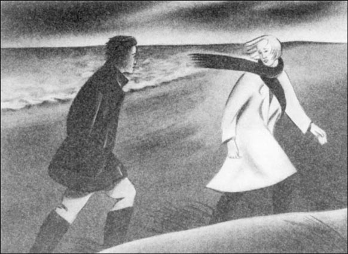
“你错了。”我慢慢地说，“我几个星期前就不再喜欢尼克了。”我知道，现在尼克对我而言已经不重要了。但邓肯对我很重要——而我无法告诉他。有一两分钟我一言不发，但我还是心存疑问。最后我说：“为什么你不告诉我米兰达的事呢？为什么这件事秘而不宣呢？这一切让我很不安。”
“我想忘掉这一切。”邓肯缓缓道来，“那段时间真是一个多事之秋。米兰达和朱丽叶都爱尼克。朱丽叶恨米兰达。她很害怕，因为米兰达想同尼克一起生活。朱丽叶告诉了我米兰达和尼克的事，因为她想让我去阻止米兰达。”
“朱丽叶告诉了我她对尼克的爱。她说，这是一个秘密。”
“一个秘密？”邓肯愤怒地笑了，“呵，米兰达始终不知道，这没错。朱丽叶很小心——她从来不提尼克。但这不难看出来。我看到过她的车停在他的农场，而且我现在经常看到她的车停在那里。”
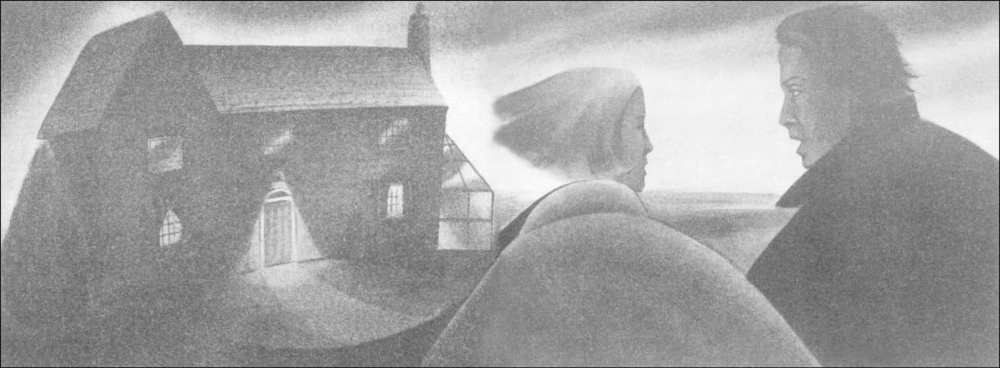
现在，天色变得更暗了。“米兰达出事的那天晚上，朱丽叶在这儿吗？”我问。也许是朱丽叶杀了她姐姐，我想。
“不，不，朱丽叶不在，尼克也不在，”邓肯说，“我在楼上，孩子们已经上床了。当时，米兰达把我叫进了卧室，说道：‘我要离开你，邓肯。我要和尼克生活在一起。’我很生气，也很苦恼，但我跑下楼进了厨房是在她摔下来之前。凯茜，没有人杀害米兰达。那是一场意外，一场可怕的意外。”邓肯把手放在我的手臂上。“现在你还不能忘掉米兰达吗？我们能不能重新开始？”
但当时我无法回答他。
我们到了海滩屋。楼下的厨房里亮着灯，起居室的灯也亮着。
“孩子们在看电视，”邓肯说。我们进了屋，邓肯打开了起居室的门。“我们回来了，”他对孩子们说，“我们这就去厨房做晚餐。”
厨房里温暖而安静。老哈维太太坐在她的椅子里。突然，我又感到害怕起来。老哈维太太的脸色极差。我站在厨房门边，无法走进去。
“妈妈，我们回来了，”邓肯说，“凯茜和我在一起，一切都很好。”
哈维太太的眼睛在她苍白的脸上看起来暗淡无光。“我怕，邓肯！我怕！孩子们爱凯茜，你爱凯茜。我看得出来。但是凯茜爱尼克。她会离开你和孩子们。记得米兰达吧？这一切又发生了。我能看出来。”
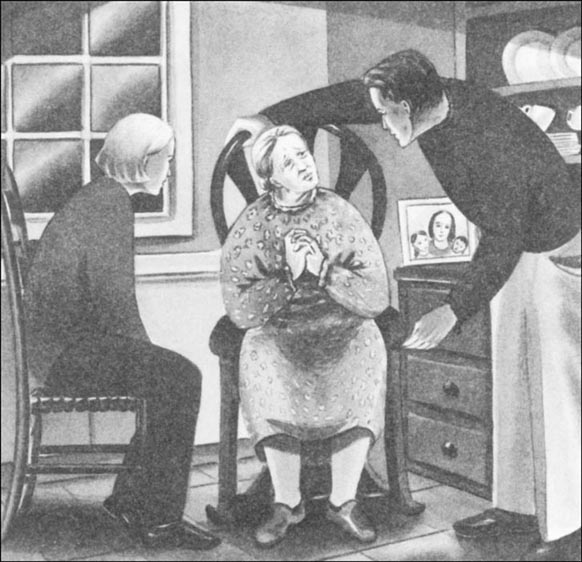
“妈妈！这不是真的。不要这么说！”
“记得米兰达吧？”哈维太太又说了一遍。“别烦恼，邓肯。你知道，我永远在你身边。因为有关节炎，我无法照顾你，但我是最爱你的，这你知道，我又要助你一臂之力了。”
忽然间，我明白了一切。“告诉我们米兰达的事，”我轻声地说，“那天晚上你做了什么？”
哈维太太看着我。“我不希望你离开，凯茜。我希望你能和孩子们在一起，与邓肯幸福地生活。我告诉你那天晚上的事吧，”她说，“可以后你一定要待在这儿和我们在一起。”
房间里非常安静。邓肯握着我的手，他的手温暖而有力。
“米兰达想离开邓肯。我在楼上自己的房间里，听见了她说的话。邓肯跑下楼，我从自己房间里出来，和米兰达谈了谈。她恨邓肯，也不愿考虑孩子们。”哈维太太开始哭，“我推了她。她站在楼梯上，我用拐杖推了她。她从楼梯上摔了下去，我回了自己的房间。我不想杀死她，只想摔断她的腿。我希望她留在家里和邓肯在一起。但她死了，最终我很高兴，因为她没有走，去和尼克生活……”
哈维太太说啊说啊，最后我们都不听她说了。
“凯茜，一切将变得很难面对，”邓肯疲惫地说，“我必须叫警察来，告诉他们母亲的事。然后我得跟孩子们谈谈。你也将很难面对这一切。你打算离开海滩屋吗？”
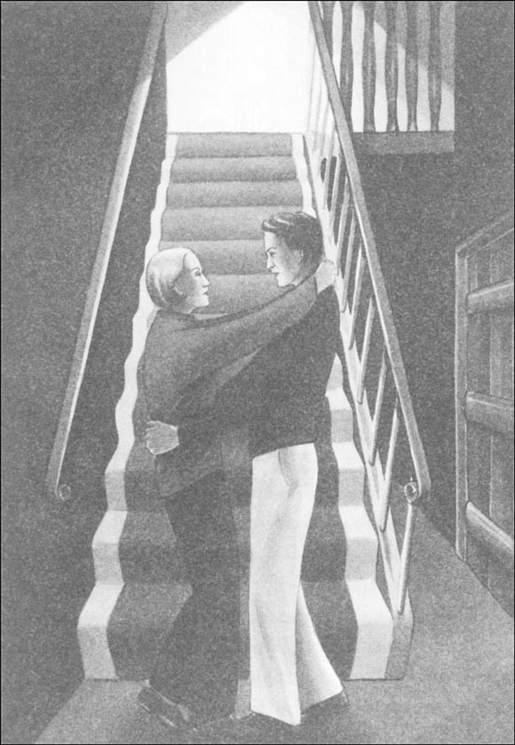
我笑了。我脑子里再没有什么疑问了。现在哈维家的所有事情我都知道了：再没有什么让我害怕的了。“不，邓肯，我不会离开。”
“孩子们需要你，”他说，“你知道的。但是我也需要你。我希望你和我在一起。但这一切过后，我们能幸福吗？”
“我们当然能，”我对他说，“对我们大家而言，如今，事情正在好起来。”
他用胳膊搂着我，吻我，在他的臂弯里我找到了自己的家。
ACTIVITIES: Before Reading
ACTIVITIES
Before Reading
1. Read the introduction of the book. How much do you know now about the story? Tick one box for each sentence.
1) Cathy Wilson is going to begin a new job.
YES □／NO □／PERHAPS □
2) There are three children in the Harvey family.
YES □／NO □／PERHAPS □
3) Cathy likes Nick, the farmer.
YES □／NO □／PERHAPS □
4) The children's mother was called Miranda.
YES □／NO □／PERHAPS □
5) The children's mother died a month ago.
YES □／NO □／PERHAPS □
6) Everybody talks about Miranda.
YES □／NO □／PERHAPS □
7) Cathy is beautiful.
YES □／NO □／PERHAPS □
2. Now read the story introduction, and choose the best ending for these sentences.
1) Cathy's parents...
(a) live in Norfolk.
(b) are very old.
(c) live with the Harvey family.
(d) are dead.
2) Cathy is sometimes lonely because...
(a) this is her first job.
(b) she doesn't like the children.
(c) she has no friends.
(d) Mrs Harvey is old.
3) After Cathy has dinner with Nick,...
(a) Mrs Harvey gets angry.
(b) Duncan goes to London.
(c) she hates Duncan.
(d) she leaves Beach House.
3. Why does everybody remember Miranda? Can you guess?
Here are some possible answers.
Tick one box for each answer.
Everybody remembers Miranda because...
1) she was very beautiful.
YES □／NO □
2) she was very kind and loving.
YES □／NO □
3) everybody hated her.
YES □／NO □
4) everybody loved her.
YES □／NO □
5) she did something terrible.
YES □／NO □
6) she was a bad mother.
YES □／NO □
ACTIVITIES: While Reading
ACTIVITIES
While Reading
1. Read Chapter 1. Choose the best question-word, and then answer the questions.
Who/ Why
1) ... did Cathy arrive late at Beach House?
2) ... did Cathy meet on the sea road in Cromer?
3) ... was Duncan Harvey angry?
4) ... was Juliet'?
5) ... did Cathy meet one day in Cromer'?
6) ... did Juliet often visit Miranda'?
2. Read Chapter 2. Who said this, and to whom?
1) 'Be careful at Beach House.'
2) 'Why don't you like Duncan?'
3) 'I don't want you to see Nick again.'
4) 'Why are you afraid of Nick?'
5) 'He's a bad man. Grandma told me.'
3. Read Chapter 3. Here are some untrue sentences about the chapter. Change them into true sentences.
1) Duncan never drove the children to school.
2) Nick's Landrover hit Cathy's car.
3) Cathy knew about Juliet and Nick.
4) Cathy learnt about Miranda's accident from the police.
5) Miranda died in a car accident.
6) Duncan Harvey was away on the day of his wife's accident.
4. Read Chapter 4, and then answer these questions.
Who
1) ... ran into a tree and then fell over?
2) ... was afraid of Duncan because of Miranda's accident?
3) ... told Grandma about Cathy's dinner with Nick?
4) ... hated Miranda and hated Nick, too?
5) ... liked Miranda, but didn't love her?
6) ... wanted to leave Duncan?
5. Before you read Chapter 5, look at these questions. Can you guess the best answers?
1) Who killed Miranda?
(a) Juliet
(b) Mrs Harvey
(c) Duncan
(d) Nobody
2) What happens to Cathy? She...
(a) leaves Beach House.
(b) finds a home.
(c) goes to live with Nick.
(d) learns all the secrets of the Harvey family.
ACTIVITIES: After Reading
ACTIVITIES
After Reading
1. Match the people with the sentences. Then use the sentences to write about the people. Use pronouns (he, she) and linking words (and, but).
Cathy / Juliet / Mrs Harvey / Nick / Miranda / Duncan
Example: Cathy works at Beach House. She looks after Susan and Tim, but she...
1) Cathy works at Beach House.
2) ______ was Miranda's sister.
3) ______ has arthritis.
4) ______ is tall with blue eyes.
5) ______ died two years ago.
6) ______ has a job with a big London company.
7) ______ lives in a farm near Beach House.
8) Cathy looks after Susan and Tim.
9) ______ works as a teacher.
10) ______ plays with his children every day.
11) ______ is lonely because she has no friends.
12) ______ likes to have lots of women friends.
13) ______ loved her children.
14) ______ is kind to his mother.
15) ______ walks with a stick.
16) ______ loves Nick very much.
17) ______ wanted to leave Duncan because she loved Nick.
18) ______ often feels upset because she can't look after the children.
2. Before Miranda died, Juliet talked to Duncan (see Chapter 5). Use these words to complete their conversation. (Use each word once.)
about, and, because, before, but, friendly, happy, lonely, often, telling, told, true, upset, want
DUNCAN: What's the matter, Juliet? You look ______.
JULIET: I am upset! I want to talk to you______ Miranda.
DUNCAN: Miranda's not______. I know that. She's lonely ______ I often work in London.
JULIET: Well, she's not ______ now. She's very ______ with Nick.
DUNCAN: Nick? But you're Nick's girlfriend! I ______ see your car at his farm.
JULIET: Yes, I know, ______ that doesn't stop Miranda. She loves Nick ______ she wants to live with him.
DUNCAN: What?! No, no, that's not ______!
JULIET: Oh yes it is! She ______ me yesterday.
DUNCAN: And why are you ______ me?
JULIET: Because I ______ you to stop her, Duncan! Talk to her. Talk to her soon, ______ she leaves you and the children.
3. Here is a new illustration for the story. Find the best place in the story to put the picture, and answer these questions.
The picture goes in Chapter ______.
1) Who are the two women in this picture?
2) Where are Duncan and the children at this moment?
3) What happened next'?
Now write a caption for the illustration.
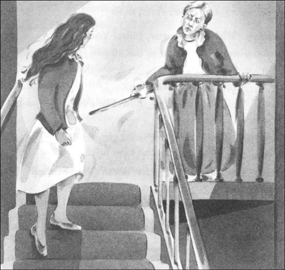
Caption: _______________________________________
4. After the end of the story, Juliet came to see Duncan and Cathy. Their conversation is in the wrong order. Write it out in the correct order and put in the speakers' names.
1) ______ 'Tell them what? She told them everything two years ago.'
2) ______ 'Yes, she loved her. But Mother didn't want Miranda to leave me and the children.'
3) ______ 'I don't believe it! Grandma loved my sister!'
4) ______ 'Duncan called the police. His mother wanted to tell them something about Miranda's accident.'
5) ______ 'What happened yesterday? Nick phoned me. He saw the police here.'
6) ______ 'Well, not everything. You see, Mother killed Miranda. She pushed her down the stairs.'
5. What happened next? Finish Cathy's story for her, with the words and names below. (Use some more than once.)
Juliet, Duncan, Nick, Mrs Harvey, the children, the police, him, her, she, we, I, us
______ came and took ______ away. Later, ______ went to live in a hospital. ______ stayed at Beach House with ______. ______ are very happy, and now ______ have a new mother. ______ and ______ are good friends, and ______ often visits ______. And what about ______at the farm? Well, perhaps ______ visits ______ sometimes, but that's ______ secret.